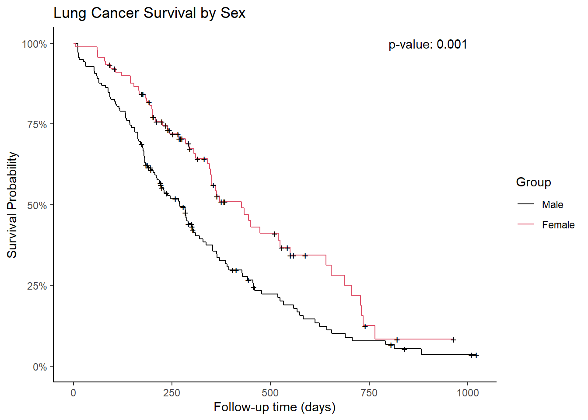

library(tidyverse)
library(survival)
library(ggfortify)
library(scales)Enhancing Survival Analysis in R with Custom Functions
R
survival analysis
kaplan-meier plot
log-rank test
data visualization
ggplot2
A step-by-step guide on how to steamline Survival Analysis in R with custom functions.
Introduction
Survival analysis is a critical aspect of statistical research, particularly in medical studies where time-to-event data, such as patient survival times, are analyzed. The primary goal is to understand and visualize the survival probability over time, often comparing different groups.
While R provides robust packages for survival analysis, automating and simplifying these tasks through custom functions can save time and reduce errors. This blog post introduces a set of custom functions in R designed to streamline survival analysis, from fitting survival models to plotting Kaplan-Meier curves with p-values.
Introduction to the Code
The R code presented here comprises a series of custom functions that facilitate the steps involved in survival analysis. The functions leverage libraries like tidyverse, survival, ggfortify, and scales. Here’s a breakdown of what each function does:
Loading Necessary Libraries
These libraries are essential for data manipulation (tidyverse), survival analysis (survival), plotting (ggfortify), and formatting scales in plots (scales).
Custom Functions for Survival Analysis
1. Fitting a Survival Object: get_survival_analysis
This function fits a survival object using the survfit function from the survival package.
get_survival_analysis <- function(time, event, group, data){
params <- list(
time = substitute(time),
event = substitute(event),
group = substitute(group),
data = substitute(data)
)
expr <- substitute(survfit(Surv(time, event) ~ group, data = data), params)
eval.parent(expr)
}Explanation:
Purpose: Fits a survival model to the data.
Parameters:
time(time to event),event(event status),group(grouping variable),data(dataset).Functionality: Creates a survival object by substituting the parameters into the
survfitfunction and evaluating it in the parent environment.
2. Obtaining p-values from Log-Rank Test: get_p_log_rank
This function performs a log-rank test to compare survival curves between groups.
get_p_log_rank <- function(time, event, group, data){
params <- list(
time = substitute(time),
event = substitute(event),
group = substitute(group),
data = substitute(data)
)
expr <- substitute(survdiff(Surv(time, event) ~ group, data = data), params)
eval.parent(expr)$pvalue
}Explanation:
Purpose: Obtains the p-value from a log-rank test.
Parameters: Same as
get_survival_analysis.Functionality: Substitutes the parameters into the
survdifffunction to perform the log-rank test and extracts the p-value.
3. Rounding p-values: round_p
This utility function rounds p-values to three decimal places.
round_p <- function(p){
format(round(p, 3), nsmall = 3)
}4. Creating Kaplan-Meier Plots with p-values: make_kaplan_meier
This function creates a Kaplan-Meier plot with an annotated p-value.
make_kaplan_meier <- function(surv_object, p_value, xcoord, ycoord = 1, fun = NULL){
autoplot(surv_object, conf.int = FALSE, fun = fun) +
annotate(
geom = "text", x = xcoord, y = ycoord,
label = str_c("p-value: ", round_p(p_value))
) +
scale_y_continuous(labels = label_percent(), limits = c(0, 1)) +
theme_classic() +
labs(
x = "Follow-up time (days)",
color = "Group"
)
}Explanation:
Purpose: Draws a Kaplan-Meier survival curve with the p-value annotation.
Parameters:
surv_object(survival object),p_value(p-value from log-rank test),xcoord(x-coordinate for annotation),ycoord(y-coordinate for annotation),fun(optional transformation function for survival probabilities).Functionality: Uses
autoplotto create the plot, adds a p-value annotation, and customizes the plot’s appearance.
5. Performing Comprehensive Survival Analysis: make_survival_analysis
This function integrates all the above steps into a single workflow.
make_survival_analysis <- function(time, event, group, data, xcoord, ycoord = 1, fun = NULL){
params <- list(
time = substitute(time),
event = substitute(event),
group = substitute(group),
data = substitute(data)
)
expr <- substitute(get_survival_analysis(time, event, group, data), params)
surv_fit <- eval.parent(expr)
expr <- substitute(get_p_log_rank(time, event, group, data), params)
p_value <- eval.parent(expr)
make_kaplan_meier(surv_fit, p_value, xcoord, ycoord, fun)
}Explanation:
Purpose: Performs the complete survival analysis, including model fitting, p-value calculation, and plotting.
Parameters: Same as
get_survival_analysiswith additional plotting coordinates and transformation function.Functionality: Combines the steps of fitting the survival model, performing the log-rank test, and generating the Kaplan-Meier plot.
Applying the Functions
Here’s an example of how to use the make_survival_analysis function with the lung dataset from the survival package:
make_survival_analysis(time = time, event = status, group = sex, data = lung, xcoord = 900) +
labs(y = "Survival Probability", title = "Lung Cancer Survival by Sex") +
scale_color_manual(values = 1:2, labels = c("Male", "Female"))
This code performs the survival analysis on the lung dataset, comparing survival times between males and females, and plots the Kaplan-Meier curves with the corresponding p-value.
Conclusion
By encapsulating the steps of survival analysis into custom functions, we can efficiently conduct and visualize survival studies. These functions not only streamline the workflow but also ensure consistency and reproducibility in survival analysis tasks. Whether you’re comparing treatment groups or exploring survival probabilities in different cohorts, these tools can significantly enhance your analytical capabilities in R.
References
- Therneau T (2024). A Package for Survival Analysis in R. R package version 3.6-4, https://CRAN.R-project.org/package=survival.
- Terry M. Therneau, Patricia M. Grambsch (2000). Modeling Survival Data: Extending the Cox Model. Springer, New York. ISBN 0-387-98784-3.
- Wickham H, Averick M, Bryan J, Chang W, McGowan LD, François R, Grolemund G, Hayes A, Henry L, Hester J, Kuhn M, Pedersen TL, Miller E, Bache SM, Müller K, Ooms J, Robinson D, Seidel DP, Spinu V, Takahashi K, Vaughan D, Wilke C, Woo K, Yutani H (2019). “Welcome to the tidyverse.” Journal of Open Source Software, 4(43), 1686. doi:10.21105/joss.01686 https://doi.org/10.21105/joss.01686.
- Yuan Tang, Masaaki Horikoshi, and Wenxuan Li. “ggfortify: Unified Interface to Visualize Statistical Result of Popular R Packages.” The R Journal 8.2 (2016): 478-489.
- Masaaki Horikoshi and Yuan Tang (2016). ggfortify: Data Visualization Tools for Statistical Analysis Results. https://CRAN.R-project.org/package=ggfortify
- Wickham H, Pedersen T, Seidel D (2023). scales: Scale Functions for Visualization. R package version 1.3.0, https://CRAN.R-project.org/package=scales.